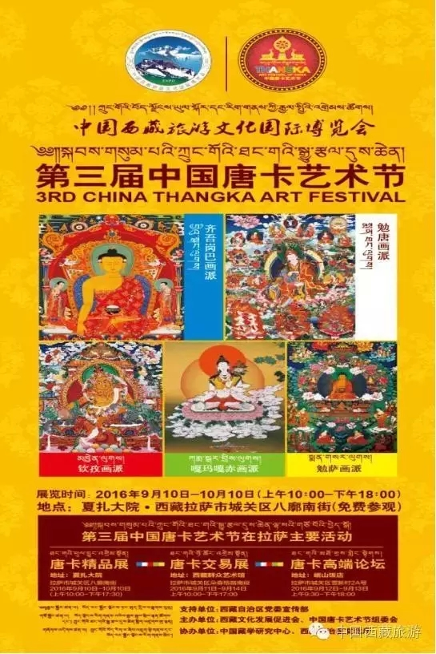

西藏商报

作为中国西藏旅游文化国际博览会的重要组成部份，中国唐卡艺术节每年都会在拉萨举行。记者昨日从中国唐卡艺术节组委会了解到，第三届中国唐卡艺术节将于9月10日至10月10日举办，将包括中国唐卡艺术节精品展、中国唐卡艺术节作品交易展、中国唐卡艺术节高端论坛以及艺术节开闭幕式等活动。 “唐卡艺术节”：逐步成为国际唐卡文化品牌盛会 唐卡被誉为“随身佛”，是用彩缎装裱后悬挂供奉的宗教卷轴画，是在公元7世纪松赞干布时期兴起的一种新颖绘画艺术，具有鲜明的民族特点、浓郁的宗教色彩和独特的艺术风格，历来被藏族人民视为珍宝。 唐卡是藏族文化中独具特色的绘画艺术形式，题材内容涉及历史、文化、宗教和生活等诸多领域，被誉为中国民族绘画艺术的珍品。唐卡的绘制极为复杂，用料极其考究，颜料全为天然矿植物原料，色泽艳丽，经久不退。 唐卡的题材包罗万象，有宗教画、传记画、历史画、反映生活习俗的风俗画，也有反映天文历算和藏医藏药、人体解剖图的科学画等等。它们具有通俗性、趣味性、知识性、宗教性、工艺性等特点，故被人们誉为藏族的“百科全书”。 作为西藏旅游文化国际博览会的重要组成部份，因而定名为“中国西藏旅游文化国际博览会--中国唐卡艺术节”，以每年一届的“唐卡艺术节”为机缘在拉萨举办，旨在加强世界和西藏间的文化、经济联系，带动整体西藏文化产业的大发展，搭建西藏与外界文化合作新平台，树立拉萨“中国唐卡之都”新名片，推动西藏文化走出国门、走向世界，使唐卡艺术成为世界级文化瑰宝，使“唐卡艺术节”逐步成为中国重要的国际唐卡文化品牌盛会。 唐卡艺术节精品展：展出期间免费向市民开放 第三届中国唐卡艺术节由“中国唐卡艺术节精品展”、“中国唐卡艺术节作品交易展”、“中国唐卡艺术节高端论坛”等活动组成，将于9月10日至10月10日期间分别在夏扎大院、自治区群艺馆及岷山饭店等地举行。 其中，“中国唐卡艺术节精品展”持续时间最长，将于9月10日至10月10日期间在拉萨八廓街夏扎大院展出，每天10:00至18:00时对外免费开放。 “中国唐卡艺术节精品展”是中国唐卡艺术节最重要的一项展览活动。该展览展出的唐卡艺术作品是通过网络及其它新闻媒体向国内外广泛征集的1000余件中经中国唐卡艺术节组委会专家评审组最终选出200余件作为每届中国唐卡艺术节精品展参展作品。中国唐卡艺术节精品展是目前国内外画师参与面最广、水准最高、最具权威性的展示平台。艺术节精品展作品中还将由专家组委会评选出金奖、银奖、铜奖等奖项，体现出精品唐卡和唐卡画师应有的价值。 西藏唐卡艺术鉴定中心：为交易展提供有效保障 西藏是唐卡艺术的发源地，以勉唐、勉萨、钦孜、噶玛噶赤等流派为主，其他藏区的唐卡基本是将西藏某一流派唐卡与当地本土艺术结合后的衍生品。 随着西藏旅游业迅猛发展，唐卡以其高超的艺术表现手法、丰富的民族文化内涵、独特的文化艺术价值，深受国内外游客喜爱，西藏唐卡目前已经具备了产业化发展的有利条件。 作为唐卡艺术节的重要组成部分，“中国唐卡艺术节作品交易展（以下称‘交易展’）”将于9月11日起在自治区群艺馆举办。该交易平台的设计，旨在整合区域传统唐卡文化资源，促进唐卡文化产业链的发展和繁荣，让广大人民群众和国内外更好地了解和认识传统唐卡艺术的魅力，体验和分享文化发展的成果。交易展以“创意、文化、效益、互动”为主题，突出强调传统文化内涵和作品的经济效益性。 2015年西藏唐卡艺术鉴定中心正式成立，该鉴定中心面向海内外承担唐卡艺术作品的鉴定工作，推动唐卡艺术保护、传承、发展和创新，同时也将为中国唐卡艺术节作品交易展提供强有力的保障。 发挥平台与纽带作用：引导唐卡艺术不断向前迈进 本届“中国唐卡艺术高端论坛”定于9月12日在岷山饭店举办。论坛将发挥平台与纽带的作用，加强国内外、区内外的区域联系，促进学术交流与智慧交融，寻求理论发展和实践创新，引导唐卡艺术不断向前迈进！ 论坛将对唐卡艺术领域内具有前瞻性和导向性的新论点、新理念、新思维的汇集，对唐卡理论研究再认识与提升，为唐卡艺术的保护、传承、创新、发展提供权威的学术理论基础，从而为推动优秀传统文化向可持续发展提供方向和依据。 从2014年第一届藏博会·中国唐卡艺术节成功举办以来，每年一届的中国唐卡艺术已经成为加强世界和西藏间的文化、经济联系，带动西藏文化产业大发展，搭建西藏与外界文化合作新平台，推动西藏文化走出国门、走向世界的平台，唐卡艺术节也为国内外的唐卡爱好者和艺术家所重视。昨日，记者从中国唐卡艺术节组委会了解到，目前，专家及本地嘉宾已陆续报到，第三届藏博会·中国唐卡艺术节将于9月10日15点在夏扎大院举行开幕式，自此，第三届藏博会·中国唐卡艺术节也将正式拉开帷幕。